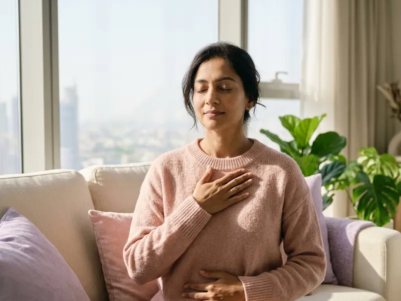

Mini journeys
5 to 10 days · self-paced
Short, gentle experiences that introduce the Matrika Now approach. An easy first step.
Short, practical journeys that help you feel calmer, understand your patterns and build habits that last. Each one is followed online in your own time, with Malvika's guidance in every step.
Enrolment opens soon. Join the waitlist for any programme and you will hear first.
Start small and go deeper when you are ready.
5 to 10 days · self-paced
Short, gentle experiences that introduce the Matrika Now approach. An easy first step.
14 to 21 days · self-paced
Structured programmes with daily content, a reflection workbook and guided audio.
4 to 8 weeks · small live groups
Facilitated group programmes with live sessions, practical exercises and deeper engagement.
Three mini journeys, a 14-day programme and one signature journey, being prepared now.

The next chapter can be your most meaningful one yet.
A guided journey for women navigating change: identity, shifting priorities, boundaries, relationships and purpose. Daily practices, reflection prompts and a workbook help you look at where you are, and choose where you go next.
21 days · online · self-paced, with guided audio and a workbook
 Mini journey · 7 days
Mini journey · 7 daysFrom feeling overwhelmed to making space for yourself.
Ten minutes a day: a short practice, a reflection prompt and a grounding exercise. By the last day you have a simple personal reset plan to keep.
7 days · online · self-paced

Mini journey · 7 daysUnderstand your stress patterns. Practise responding differently.
Learn how stress shows up in your body and your day, and practise grounding, relaxation and self-regulation you can use when it does.
7 days · online · self-paced
Change the way you relate to yourself.
Meet your inner critic with curiosity instead of fear. Seven days of reflection on self-acceptance, emotional awareness and kinder ways of speaking to yourself.
7 days · online · self-paced
 Guided transformation · 14 days
Guided transformation · 14 daysStop chasing change. Start creating it.
Built on Malvika's From Goals to Systems workshop: habit formation, movement, sleep, nutrition awareness and consistency, ending with your own wellbeing plan.
14 days · online · self-paced
Short and focused, so it fits into a real day.
The first programmes are being prepared now. Join the waitlist for the one you are interested in, and Malvika will write to you as soon as enrolment opens.
Online, at your own pace, through a private learning space with the videos, audio and workbook for each day. Access details are shared when you enrol.
Prices, payment and refund terms will be shown here before enrolment opens, so you can read them before you decide.
If you are new, the 7-Day Reset is a gentle first step. If you are not sure, take the free archetype reflection or send Malvika a message.
No. They are educational wellbeing programmes for reflection and everyday practice. They do not diagnose or treat anxiety, depression or any other condition, and they complement, not replace, medical and psychological care.
Take the free reflection, or tell Malvika a little about what you are looking for.